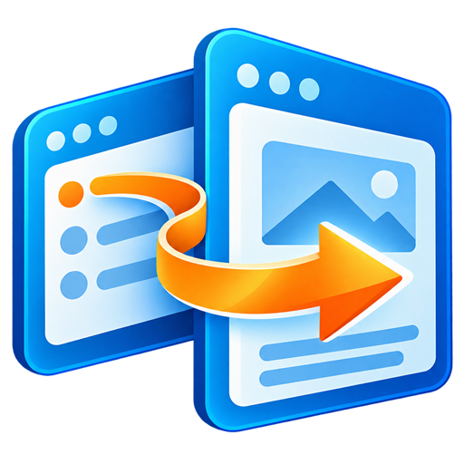
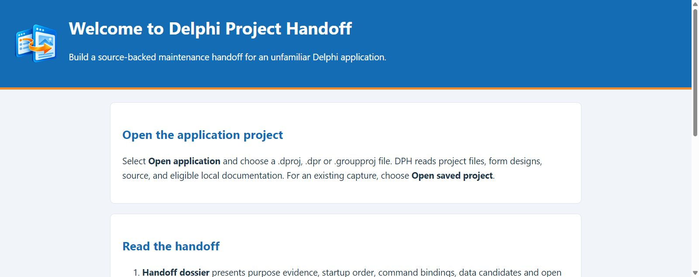
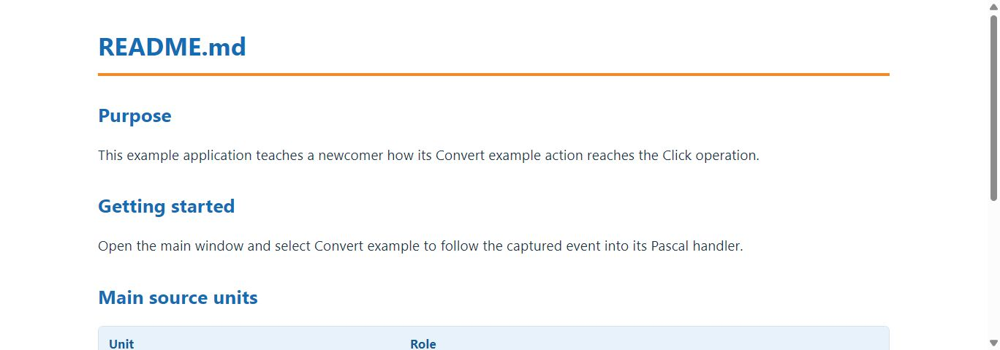
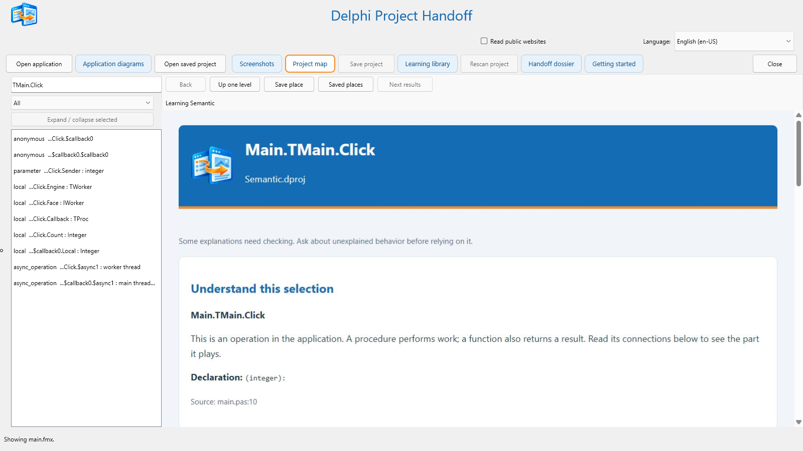

01
Open the project
Choose its .dproj, .dpr, or .groupproj. DPH reads project structure, Pascal source, forms, and eligible local documents.
Experimental beta · Current build 0.8.0.19
Open an unfamiliar application project. Follow its forms, source, and available guides into a clearer picture of what it contains and where to start.
Reads the project you select. Does not compile, run, or change that application.

Delphi ProjectThe problem
Taking over a Delphi application often means inheriting a project without a guided tour. You can read every file and still struggle to see which form starts first, how a control reaches its handler, or which document explains the work.
DPH gathers that available evidence into a learning route. It helps a newcomer orient themselves, inspect what the files support, and see where an explanation still needs a human check.
A practical route
DPH does not invent an application story. It traces what is present and keeps uncertain behavior visible.
Choose its .dproj, .dpr, or .groupproj. DPH reads project structure, Pascal source, forms, and eligible local documents.
Start with the registered forms, inspect generated design views, and browse grouped learning topics drawn from available material.
Move from a screen or control to its source and connections. Save the capture and inspect what still needs checking.
Inside the application
These views use images from the current DPH guides and a bundled sample project. They illustrate the interface rather than a live analysis of your project.



Generated form views represent saved .fmx and .dfm designs; runtime appearance can differ. Diagram arrows describe source-derived relationships, not measured execution.
What you can inspect
Move between the first explanation and the supporting detail without losing sight of the selected application.
How to open a project and navigate DPH.
Purpose, startup forms, commands, data, and open questions—with evidence for each claim.
Formatted topics from project documents and screen information.
Units, objects, controls, routines, and source-linked connections.
Form-derived design views, with Fit and Native pixels.
Source-derived routes, data paths, and dependencies.
Built for careful exploration
DPH reads the Delphi application you select without compiling, launching, or modifying it. The optional public-website reader starts off; turn it on only when you want DPH to read eligible HTTPS pages referenced by project documents.
How the Internet option worksGood to know
DPH is still experimental. These limits matter when you evaluate what it tells you.
No. Passive discovery reads selected project files, forms, and eligible local documents. It does not compile, launch, or change the target application.
No. DPH reconstructs blank design views from saved .fmx and .dfm form definitions. Custom painting, runtime styling, and data can make the running application look different.
Normal project discovery and all 35 interface packs work offline. Reading cited public websites is optional and off by default. This website's optional language widget uses an online service; it is separate from the desktop application's offline packs.
No. Project source, documents, identifiers, and citations stay local and retain their original language. Interface language choices affect DPH's own controls and explanations.
The beta includes 35 offline interface languages. Developers can use Delphi App Translation Studio to prepare and review more translations from the source. A new language needs integration and testing in DPH; it is not an in-app download. Read the language-pack guidance.
Use each finding as a starting point. Source connections and saved form properties cannot establish every runtime condition. DPH calls out explanations that need checking.
Release history
Follow each experimental beta from its release notes to the matching Windows and editable-source packages. Earlier downloads remain available for comparison.
Current downloadable beta · 23 October 2026
New: Change Guide is available to test. It helps a maintainer investigate a proposed code change before editing. The feature is included in both complete Windows downloads and the build-ready editable source.
Where to find it: Open a project, go to Project map, choose Change Guide, then select a specific control or routine. The guide brings together incoming uses, nearby connections, source files worth opening, suggested checks, open questions, and citations you can follow. View source code and Change impact provide deeper inspection, with a route back to the guide.
What to verify: Its connections come from static source inspection; they are leads for investigation, not proof of runtime behavior or a guarantee that an edit is safe. The generated guide narrative is English-language beta content. Its new navigation buttons use the 35 offline interface language packs, while project source and documents stay local and in their original language.
The updated User Guide, Engineering Guide, local HTML help, and focused Change Guide directions ship with this release. Developer feedback is welcome at churchesite@gmail.com.
Introduced four smaller downloads: complete Win64 and Win32 editions, independent build-ready source, and optional translation-authoring projects.
Shipped refreshed Windows and source packages with corrected RAD Studio run paths, designer-owned startup dialogs, and configured project artwork.
Audited all 236 designer buttons across 35 language packs and corrected context-sensitive actions, technical labels, and button widths.
Corrected the Spanish Close action to Cerrar.
Excluded unrelated archived project documents and restored table-of-contents leaders in the document reader.
Kept project-supplied prose in its original language and separated it from localized dossier guidance.
Completed localized application guidance across 35 interface languages.
Completed translations for project-opening progress messages.
Improved localized navigation and formatted project-document viewing; repaired translated dialogs and HTML rendering.
Added project rescan and improved localization consistency.
Made project-opening progress and the save control clearer.
Improved large-project loading and presentation of captured project evidence.
Narrowed project-document selection and restored faster screen and diagram views.
Rendered the empty dossier as HTML and improved recovery of saved SQLite journals.
Restored the dossier when opening a saved project.
Corrected saved-project opening, avoided unnecessary rescans, and deferred heavy views until selected.
Corrected startup and preview behavior.
Introduced the four-part handoff dossier and temporary captures until saved, with separate experimental Windows and editable-source packages.
Try the current beta
Choose one complete Windows edition to run DPH and try Change Guide, or the editable source to inspect and build it in RAD Studio 37. The downloads page explains each package.
Keep WebView2Loader.dll beside the executable and its Localization/Languages folder in place.